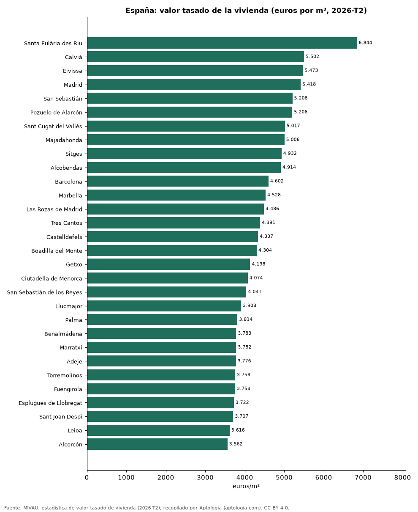

Precio del metro cuadrado de la vivienda en 306 municipios de España según el valor tasado oficial (segundo trimestre de 2026)
Estudio con datos abiertos (CC BY 4.0). Versión original: https://github.com/elbroker/aptologia-datos/tree/main/estudios/valor-tasado-vivienda-m2-municipios-espana-2026 · DOI: 10.5281/zenodo.23471363
El metro cuadrado de vivienda libre más caro de España en el segundo trimestre de 2026 se tasó en Santa Eulària des Riu (Illes Balears), con 6.844 euros, y el más barato de 306 municipios en Villarrobledo (Albacete), con 666 euros. Madrid marca 5.418 euros por m² y Barcelona 4.602 euros. En la mediana de 113 municipios, la vivienda nueva se tasa un 16,3 % por encima de la usada.
Resumen: ordenamos 306 municipios con 30 tasaciones o más en el segundo trimestre de 2026.
Actualizado: 18 de octubre de 2026 (datos del segundo trimestre de 2026) · Próxima actualización: mensual.

Resumen
| Indicador | Valor |
|---|---|
| Más caro | Santa Eulària des Riu: 6.844 euros/m² |
| Más barato | Villarrobledo: 666 euros/m² |
| Madrid | 5.418 euros/m² |
| Prima de la vivienda nueva (mediana) | 16,3 % |
Los 40 municipios más caros
| Municipio | Provincia | Euros por m² | Vivienda nueva | Usada | Tasaciones |
|---|---|---|---|---|---|
| Santa Eulària des Riu | Illes Balears | 6.844 | 7.590 | 6.800 | 123 |
| Calvià | Illes Balears | 5.502 | 6.606 | 5.453 | 191 |
| Eivissa | Illes Balears | 5.473 | 6.291 | 5.435 | 121 |
| Madrid | Madrid | 5.418 | 6.205 | 5.395 | 11.686 |
| San Sebastián | Gipuzkoa | 5.208 | 6.237 | 5.186 | 424 |
| Pozuelo de Alarcón | Madrid | 5.206 | 5.402 | 5.196 | 324 |
| Sant Cugat del Vallès | Barcelona | 5.017 | 5.678 | 4.988 | 328 |
| Majadahonda | Madrid | 5.006 | 4.784 | 5.014 | 193 |
| Sitges | Barcelona | 4.932 | — | 4.924 | 151 |
| Alcobendas | Madrid | 4.914 | 5.523 | 4.883 | 322 |
| Barcelona | Barcelona | 4.602 | 5.110 | 4.595 | 5.519 |
| Marbella | Málaga | 4.528 | 5.955 | 4.476 | 748 |
| Las Rozas de Madrid | Madrid | 4.486 | — | 4.469 | 348 |
| Tres Cantos | Madrid | 4.391 | 4.362 | 4.396 | 152 |
| Castelldefels | Barcelona | 4.337 | — | 4.327 | 264 |
| Boadilla del Monte | Madrid | 4.304 | 4.050 | 4.347 | 296 |
| Getxo | Bizkaia | 4.138 | — | 4.125 | 206 |
| Ciutadella de Menorca | Illes Balears | 4.074 | — | 4.077 | 105 |
| San Sebastián de los Reyes | Madrid | 4.041 | — | 4.036 | 262 |
| Llucmajor | Illes Balears | 3.908 | — | 3.900 | 130 |
| Palma | Illes Balears | 3.814 | 4.411 | 3.792 | 1.274 |
| Benalmádena | Málaga | 3.783 | 3.906 | 3.779 | 402 |
| Marratxí | Illes Balears | 3.782 | — | 3.768 | 113 |
| Adeje | Santa Cruz de Tenerife | 3.776 | — | 3.774 | 199 |
| Torremolinos | Málaga | 3.758 | 4.248 | 3.736 | 326 |
| Fuengirola | Málaga | 3.758 | 4.547 | 3.711 | 423 |
| Esplugues de Llobregat | Barcelona | 3.722 | — | 3.713 | 172 |
| Sant Joan Despí | Barcelona | 3.707 | — | 3.689 | 119 |
| Leioa | Bizkaia | 3.616 | — | 3.598 | 89 |
| Alcorcón | Madrid | 3.562 | — | 3.563 | 405 |
| Bilbao | Bizkaia | 3.529 | 3.870 | 3.524 | 956 |
| Villaviciosa de Odón | Madrid | 3.524 | 4.117 | 3.469 | 114 |
| Rivas-Vaciamadrid | Madrid | 3.521 | — | 3.512 | 238 |
| Estepona | Málaga | 3.518 | 4.046 | 3.452 | 470 |
| Xàbia | Alicante | 3.507 | 3.942 | 3.489 | 170 |
| Rincón de la Victoria | Málaga | 3.506 | — | 3.498 | 201 |
| Gavà | Barcelona | 3.465 | — | 3.455 | 193 |
| Mijas | Málaga | 3.365 | 3.761 | 3.339 | 675 |
| Sant Feliu de Llobregat | Barcelona | 3.330 | — | 3.317 | 156 |
| Málaga | Málaga | 3.320 | 4.140 | 3.283 | 1.722 |
Valor tasado medio por m² de la vivienda libre (MIVAU), 2026-T2.
Los 15 municipios más baratos
| Municipio | Provincia | Euros por m² | Tasaciones |
|---|---|---|---|
| Villarrobledo | Albacete | 666 | 55 |
| Puertollano | Ciudad Real | 686 | 124 |
| Tomelloso | Ciudad Real | 767 | 160 |
| Hellín | Albacete | 780 | 68 |
| Villanueva de la Serena | Badajoz | 802 | 75 |
| Almansa | Albacete | 803 | 96 |
| Andújar | Jaén | 819 | 119 |
| Jumilla | Murcia | 829 | 77 |
| Valdepeñas | Ciudad Real | 864 | 94 |
| Yecla | Murcia | 882 | 123 |
| Linares | Jaén | 889 | 232 |
| Caravaca de la Cruz | Murcia | 903 | 100 |
| Ponferrada | León | 923 | 188 |
| Almendralejo | Badajoz | 933 | 125 |
| Cieza | Murcia | 954 | 98 |
Preguntas frecuentes
¿Cuál es el municipio con la vivienda más cara de España? Santa Eulària des Riu, con un valor tasado de 6.844 euros por m² en el segundo trimestre de 2026.
¿Cuánto más cara es la vivienda nueva que la usada en España? En la mediana de 113 municipios, un 16,3 % más por m² tasado.
Metodología
- Fuente: MIVAU, estadística de valor tasado de vivienda (2026-T2). Las tablas oficiales se tomaron de los exportes nocturnos de Aptología del 18 de octubre de 2026 (es_alquiler_municipio, es_alquiler_barrio, es_compra_municipio), que las recopilan sin modificarlas.
- Estadístico: valor tasado medio por m² de vivienda libre, total, nueva y usada.
- Qué se mide: rentas de contratos registrados (fianzas) o valores de tasación oficiales, no precios pedidos en portales.
- Muestra mínima: solo se publican filas con 30 contratos o tasaciones o más.
- Limitaciones: cada fuente usa su propia metodología (media en Cataluña, mediana en la Comunitat Valenciana), por lo que no deben compararse entre sí sin cautela.
- Datos abiertos: datos.csv, licencia CC BY 4.0.
Cómo citar
Pinzón Pineda, D. M. (2026). Precio del metro cuadrado de la vivienda en 306 municipios de España según el valor tasado oficial (segundo trimestre de 2026). Aptología (aptologia.com). https://github.com/elbroker/aptologia-datos/tree/main/estudios/valor-tasado-vivienda-m2-municipios-espana-2026. Datos: datos.csv, licencia CC BY 4.0.